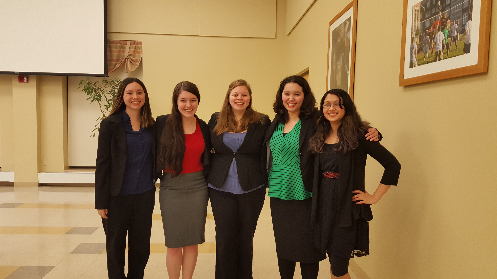

Our current executives and advisors:
- President: Miya Gaskell
- Vice President: Alex Bittle
- Treasurer: Hope Wallace
- Public Relations: Jordan Feeley
- Events Coordinator: Trivani Shahi
- Webmaster: August Lu
- Club Advisor: Kathryn Fisler

Pictured from left to right: Jordan, Hope, Alex, Miya, and Trivani